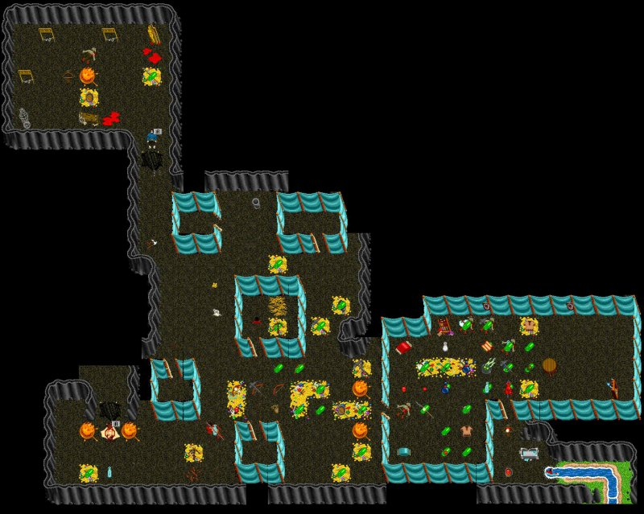

| GoblinKing Lair |
 |
| Back to Aleria. |
| Big zoo surrounds GoblinKing with The Fool messing around with you. The GoblinKing has a +4 axe with Transmute Level 13. Trade Axe for Light Ring. The Witch Doctor casts darkness and has a staff. Exit the lair by swimming down the river. To get to the Lair, go through the dwarf village by going through 2 walls west of the Treehouse ladder. |
| Map by SirB |